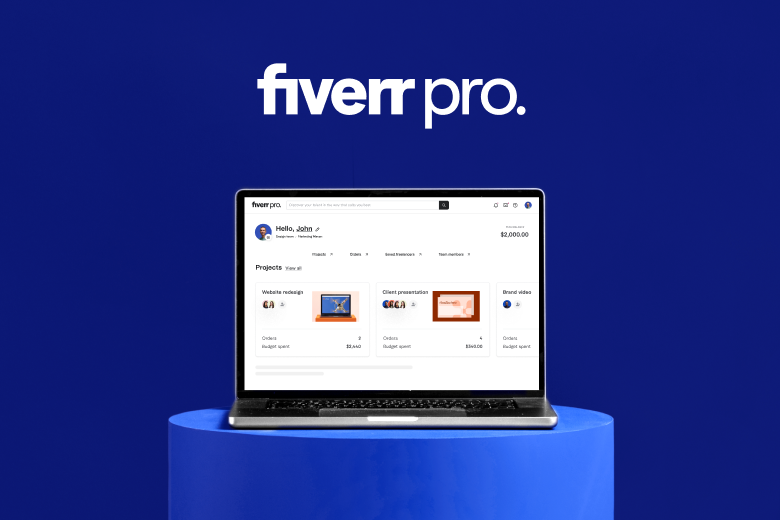

By Fiverr Team | August 1, 2023

Big news, businesses: Fiverr Business is now Fiverr Pro.
Discover an enhanced solution designed to simplify and streamline
collaboration with freelancers. Here’s what you get when you go Pro:
Fiverr Pro provides businesses with an all-new dashboard that centralizes
everything you need, placing your projects, orders, favorite freelancers, and
shared budget right at your fingertips.
Finding the ideal freelancer is essential to your project’s success. With Fiverr
Pro's curated catalog, rest assured you'll be connected with the most
qualified freelancers. Each expert is carefully vetted, ensuring you collaborate
with only the best in the business.
With the carefully curated Fiverr Pro catalog of experts and advanced tools
to support progress and efficiency, your projects will always hit the mark.
Discover Fiverr Pro today and elevate your business to greater heights!

Whether you're scalling up your small business or building a brand
form scratch, we've got the resources you neeed to keep you
informed and at the top of your game.